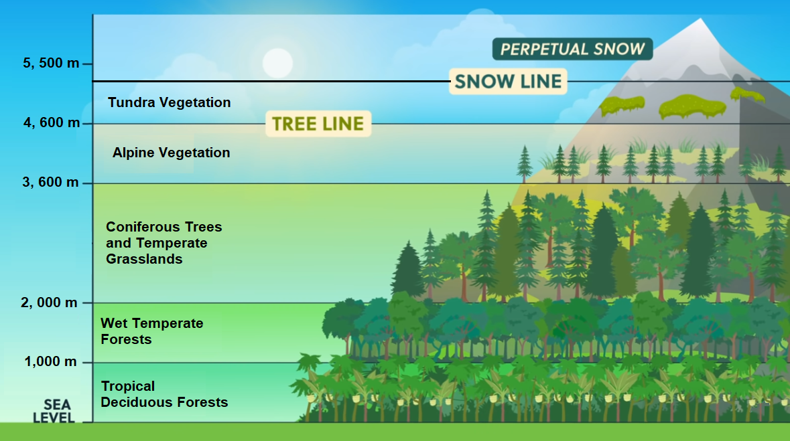

Natural Vegetation of India
Natural vegetation refers to a plant community that has been
left undisturbed over a long time, so as to allow its individual
species to adjust themselves to climate and soil conditions as
fully as possible. Thus, cultivated crops and fruits, orchards
form part of vegetation but not natural vegetation.
The vegetation, which purely belong to a particular country are
known as endemic or indigenous species of that country.
But those which have come from outside countries are termed as
exotic/alien plants.
India is a land of great variety of natural vegetation.
Himalayan heights are marked with temperate vegetation; the
Western Ghats and the Andaman Nicobar Islands have tropical rain
forests, the deltaic regions have tropical forests and
mangroves; the desert and semi desert areas of Rajasthan are
known for cactii, a wide variety of bushes and thorny
vegetation. Depending upon the variations in the climate and the
soil, the vegetation of India changes from one region to
another.
Types of Forests
On the basis of certain common features such as predominant
vegetation type and climatic regions, Indian forests can be
divided into the following groups:
- Tropical Evergreen Forests
- Tropical Deciduous Forests
- Tropical Thorn Forests and Scrubs
- Montane Forests
- Mangrove Forests
Tropical Evergreen Forests
-
These forests are restricted to heavy rainfall areas of the
Western Ghats and the island groups of Lakshadweep, Andaman
and Nicobar, upper parts of Assam and Tamil Nadu coast.
-
They are at their best in areas having more than 200 cm of
rainfall with a short dry season. They are also known as
Tropical Rainforest.
-
The trees reach great heights up to 60 metres or even above.
Since the region is warm and wet throughout the year, it has a
luxuriant vegetation of all kinds — trees, shrubs and creepers
giving it a multilayered structure. There is no definite time
for trees to shed their leaves. As such, these forests appear
green all the year round.
-
Some of the commercially important trees of this forest are
ebony, mahogany, rosewood, rubber and cinchona.
-
The common animals found in these forests are elephant,
monkey, lemur and deer. One-horned rhinoceroses are found in
the jungles of Assam and West Bengal. Besides these animals,
plenty of birds, bats, sloth, scorpions and snails are also
found in these jungles.
Tropical Deciduous Forests
-
These are the most widespread forests of India. They are also
called the monsoon forests and spread over the region
receiving rainfall between 200 cm and 70 cm.
-
Trees of this forest type shed their leaves for about six to
eight weeks in dry summer.
-
On the basis of the availability of water, these forests are
further divided into moist and dry deciduous.
-
The tropical moist deciduous forests are found in areas
receiving rainfall between 200 and 100 cm. These forests
exist, therefore, mostly in the eastern part of the country
— northeastern states, along the foothills of the Himalayas,
Jharkhand, West Odisha and Chhattisgarh, and on the eastern
slopes of the Western Ghats. Teak is the most dominant
species of this forest. Bamboos, sal, shisham, sandalwood,
khair, kusum, arjun and mulberry are other commercially
important species.
-
The dry deciduous forests are found in areas having rainfall
between 100 cm and 70 cm. These forests are found in the
rainier parts of the Peninsular plateau and the plains of
Bihar and Uttar Pradesh. There are open stretches, in which
teak, sal, peepal and neem grow. A large part of this region
has been cleared for cultivation and some parts are used for
grazing.
-
In these forests, the common animals found are lion, tiger,
pig, deer and elephant. A huge variety of birds, lizards,
snakes and tortoises are also found here.
Tropical Thorn Forests and Scrubs
-
Tropical thorn forests and Scrubs occur in the areas which
receive rainfall less than 70 cm. It includes semi-arid areas
of south west Punjab, Haryana, Rajasthan, Gujarat, Madhya
Pradesh and Uttar Pradesh.
-
Trees are scattered and have long roots penetrating deep into
the soil in order to get moisture. The stems are succulent to
conserve water. Leaves are mostly thick and small to minimise
evaporation.
-
In these forests Acacias, palms, euphorbias and cacti are the
main plant species and the common animals are rats, mice,
rabbits, fox, lion, wild ass, horses and camels.
Montane Forests
-
In mountainous areas, the decrease in temperature with
increasing altitude leads to the corresponding change in
natural vegetation. These forests cover mostly the southern
slopes of the Himalayas, places having high altitude in
southern and north-east India.
-
The Himalayan ranges show a succession of vegetation from the
tropical to the tundra, with change in the altitude.
-
Deciduous forests are found in the foothills of the
Himalayas. It is succeeded by the wet temperate type
of forests between an altitude of 1,000-2,000 m which is
dominated by evergreen broad-leaf trees, such as oaks and
chestnuts.
-
Between 1,500-1,750 m, pine forests are also well-developed
in this zone, with Chir Pine as a very useful commercial
tree. Deodar, a highly valued endemic species grows mainly
in the western part of the Himalayan range. Deodar is a
durable wood mainly used in construction activity.
Similarly, the chinar and the walnut, which sustain the
famous Kashmir handicrafts, belong to this zone.
-
Blue pine and spruce appear at altitudes of 2,225-3,048 m.
At many places in this zone, temperate grasslands are
also found.
-
At high altitudes, generally, more than 3,600 metres above
the sea level, temperate forests and grasslands give way to
the Alpine vegetation. Silver firs, junipers, pines,
birch and rhododendrons, etc. occur between 3,000-4,000 m.
However, they get progressively stunted as they approach the
snow-line. Ultimately, through shrubs and scrubs, they merge
into the Alpine grasslands. These are used extensively for
grazing by nomadic tribes, like the Gujjars and the
Bakarwals.
-
At higher altitudes, mosses and lichens form part of
tundra vegetation. The common animals found in these
forests are Kashmir stag, spotted dear, wild sheep, jack
rabbit, Tibetan antelope, yak, snow leopard, squirrels,
Shaggy horn wild ibex, bear and rare red panda, sheep and
goats with thick hair.

Mangrove Forests
-
The mangrove tidal forests are found in the areas of coasts
influenced by tides. Mud and silt get accumutated on such
coasts. Dense mangroves are the common varieties with roots of
the plants submerged under water.
-
The deltas of the Ganga, the Mahanadi, the Krishna, the
Godavari and the Kaveri are covered by such vegetation.
-
In the Ganga-Brahmaputra delta, sundari trees are found, which
provide durable hard timber. Palm, coconut, keora, agar, etc.,
also grow in some parts of the delta.
-
Royal Bengal Tiger is the famous animal in these forests.
Turtles, crocodiles, gharials and snakes are also found in
these forests.
Forest Conservation
The total forest cover in India (2021) is 7,12,249 square
kilometers which is 21.67% of the total geographical area.
Forests have an intricate interrelationship with life and
environment. These provide numerous direct and indirect
advantages to our economy and society.
To a vast number of tribal people, the forest is a home, a
livelihood, their very existence. It provides them food, fruits
of all kinds, edible leaves, honey, nourishing roots etc. It
provides them with material to build their houses and items for
practising their arts. The importance of forests in tribal
economy is well-known as they are the source of sustenance and
livelihood for tribal communities. It is commonly believed that
the tribal communities live in harmony with nature and protect
forests.
Hence, conservation of forest is of vital importance to the
survival and prosperity of humankind. Accordingly, the
Government of India proposed to have a nation-wide forest
conservation policy, and adopted a forest policy in 1952, which
was further modified in 1988. According to the new forest
policy, the Government will emphasise sustainable forest
management in order to conserve and expand forest reserve on the
one hand, and to meet the needs of local people on the other.
The forest policy aimed at:
-
bringing 33 per cent of the geographical areas under forest
cover;
-
maintaining environmental stability and to restore forests
where ecological balance was disturbed;
-
conserving the natural heritage of the country, its biological
diversity and genetic pool;
-
checks soil erosion, extension of the desert lands and
reduction of floods and droughts;
-
increasing the forest cover through social forestry and
afforestation on degraded land;
-
increasing the productivity of forests to make timber, fuel,
fodder and food available to rural population dependant on
forests, and encourage the substitution of wood;
-
creating of a massive peoples movement involving women to
encourage planting of trees, stop felling of trees and thus,
reduce pressure on the existing forest.
Based on the forest conservation policy the following steps were
initiated:
Social Forestry
Social forestry means the management and protection of forests
and afforestation on barren lands with the purpose of helping in
the environmental, social and rural development. The National
Commission on Agriculture (1976) has classified social forestry
into Urban forestry, Rural forestry and Farm Forestry.
-
Urban forestry pertains to the raising and management of trees
on public and privately owned lands in and around urban
centres such as green belts, parks, roadside avenues,
industrial and commercial green belts, etc.
-
Rural forestry lays emphasis on promotion of agro-forestry and
community-forestry.
-
Agro-forestry is the raising of trees and agriculture crops
on the same land inclusive of the waste patches. It combines
forestry with agriculture, thus, altering the simultaneous
production of food, fodder, fuel, timber and fruit.
-
Community forestry involves the raising of trees on public
or community land such as the village pasture and temple
land, roadside, canal bank, strips along railway lines, and
schools etc. Community forestry programme aims at providing
benefits to the community as a whole.
-
Farm forestry is a term applied to the process under which
farmers grow trees for commercial and non-commercial purposes
on their farm lands. Forest departments of various states
distribute seedlings of trees free of cost to small and medium
farmers. Several lands such as the margins of agricultural
fields, grasslands and pastures, land around homes and cow
sheds may be used for raising trees under non-commercial farm
forestry.